This project investigates computational inequalities in public Automatic Speech Recognition (ASR) systems when processing Chinese-accented English. Many ASR systems are trained on standard English speech patterns, meaning that non-native speakers like Chinese students may face higher false recognition and service failure rates.
Consequently, the communication costs are shifted to users with accents, who often need to adjust their pronunciation to suit the system's recognition methods.
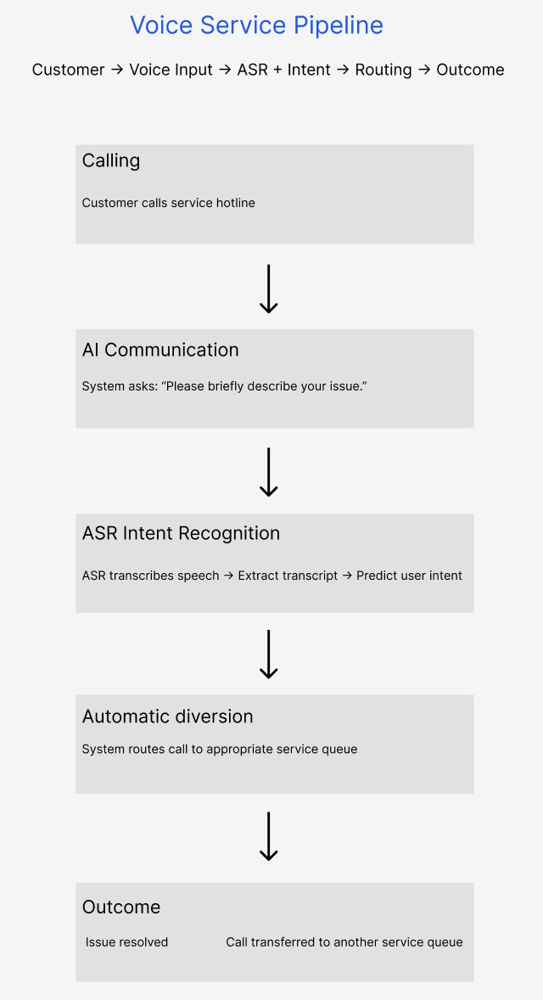
Automatic speech recognition systems are not a single interactive process, but a complex computational process consisting of multiple stages, during which errors accumulate as each stage progresses. Speech is collected, transcribed, interpreted, and classified according to intent, and service decisions are made. This means that an error in any step can affect the final result of the entire system.
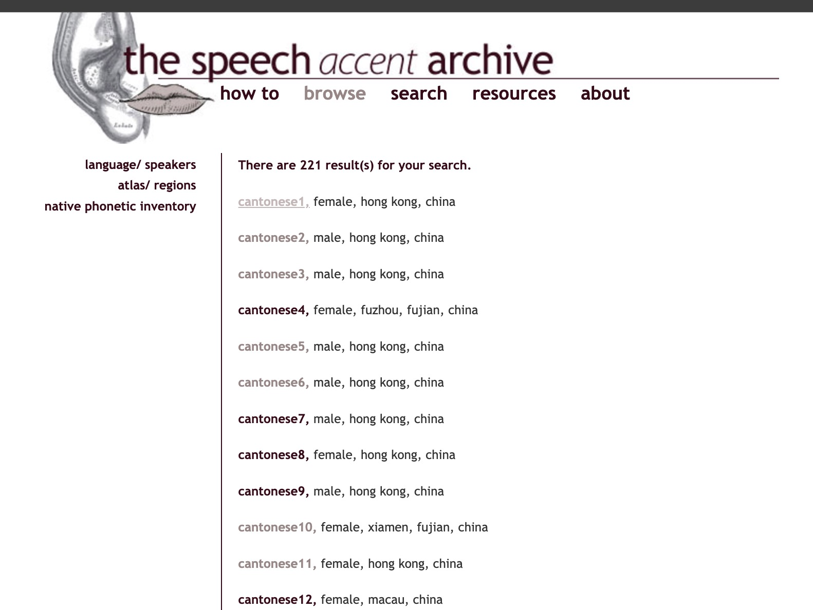
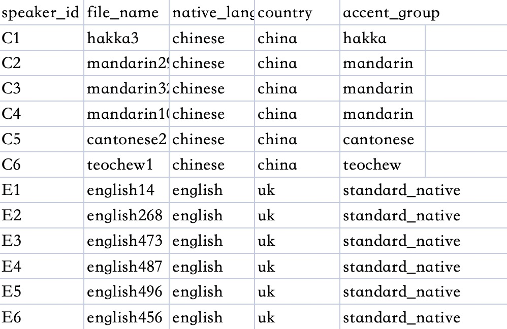
This dataset contains English pronunciation samples from different linguistic backgrounds. In this project, I selected 6 English samples with Chinese accents (such as Mandarin and Cantonese) to represent non-native accents and compared them with 6 standard native English pronunciations.This dataset contains English pronunciation samples from different linguistic backgrounds. In this project, I selected 6 English samples with Chinese accents (such as Mandarin and Cantonese) to represent non-native accents and compared them with 6 standard native English pronunciations.
In real-world communication, speech is composed not only of words but also includes features such as accent, speech rate, pauses, repetitions, and self-corrections. However, in an ASR system, these complex speech features are compressed into structured data, such as speaker_id, native_language, country, and accent_group, and ultimately transformed into text transcription.
How does the system decide what counts?
As shown in Figure 3, the system categorizes speakers into categories such as "standard-native accent" and "non-native accent," which implicitly sets "standard English" as the benchmark. After transcription, the voice signal will be further classified into accent categories, confidence levels, and intentions, and these classifications directly influence the system's decision-making. The language itself is constantly changing, but the system categorizes it into fixed categories, thereby ignoring mixed accents and multilingual backgrounds. This classification not only organizes the data, but also actively defines which voices are considered "valid", and leads to the situation where users with accents are more likely to be misunderstood or incorrectly processed.
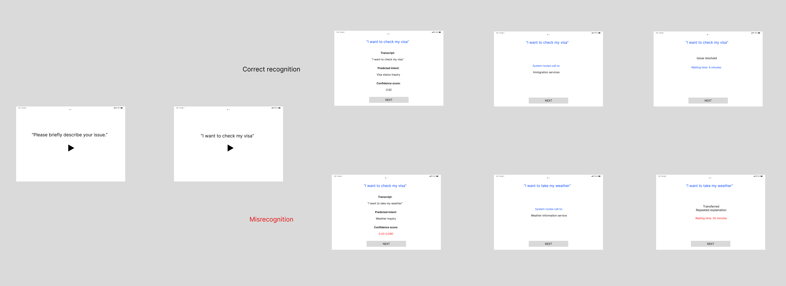
When the model processes speech with non-native accents, it is prone to errors in recognizing phonemes or words. These minor deviations may be magnified throughout the entire system process, thereby affecting the prediction of intentions and the final service outcome. For example: If a user wants to inquire about their visa status, but the automatic speech recognition system transcribes their words as "I want to take the weather ", this transcription error leads to a misprediction of the user's intention and results in the call being transferred to the wrong service queue. Therefore, non-native speakers with an accent will have to repeatedly make their requests and will also have to wait for a longer period of time.
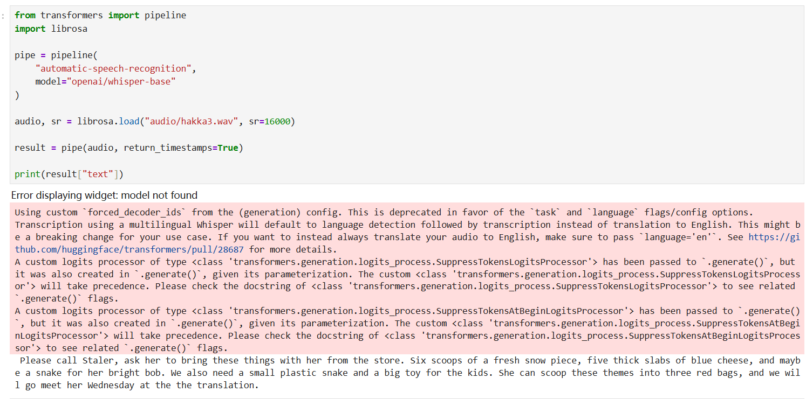
The reason for choosing the "Whisper" model from OpenAI is that it has strong compatibility in terms of accents and relatively high recognition accuracy, making it suitable for evaluating the speech recognition behaviors of different accent groups. I used the algorithm of Whisper to transcribe a single audio file to verify whether the automatic speech recognition (ASR) process was functioning properly and to observe the initial mode of misrecognition. The results show that although the model can capture the overall meaning of the speech, it makes several errors at the word level, especially in proper nouns and words with similar pronunciations. This preliminary finding indicates that accent differences may affect the accuracy of transcription.
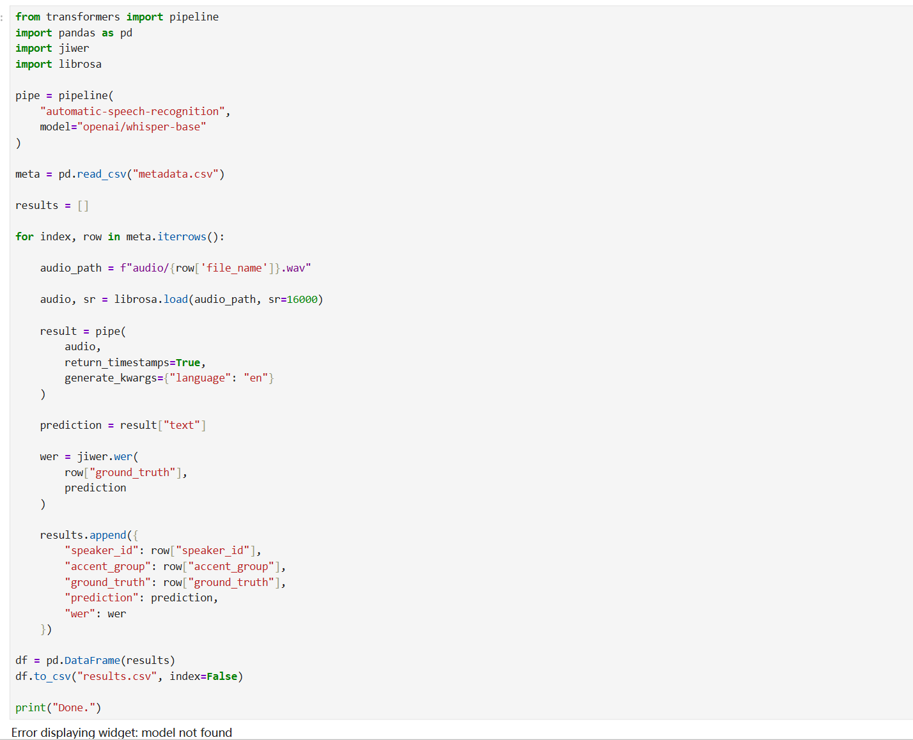
"The 'ground_truth' is the correct transcription of the audio, while 'prediction' is the text output by the model. wer is used to measure the difference between the two, including substitution, deletion and insertion errors. The higher the value, the worse the recognition effect."
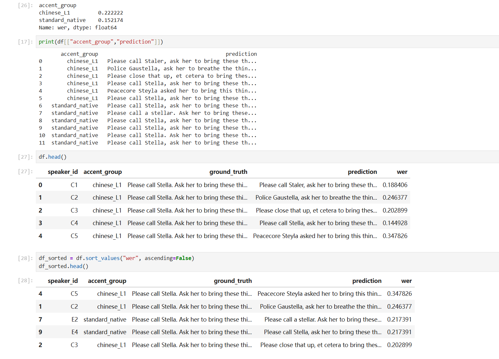
After sorting by WER, among the top five samples with the poorest recognition results, three were from the "chinese_L1" accent. This indicates that the model's performance in this accent was significantly weaker. The WER (Word Error Rate) of the sample C5 was the highest, indicating the most severe errors and a significant discrepancy between the predicted result and the actual text. In contrast, the standard_native accent had fewer overall errors and was more stable overall.
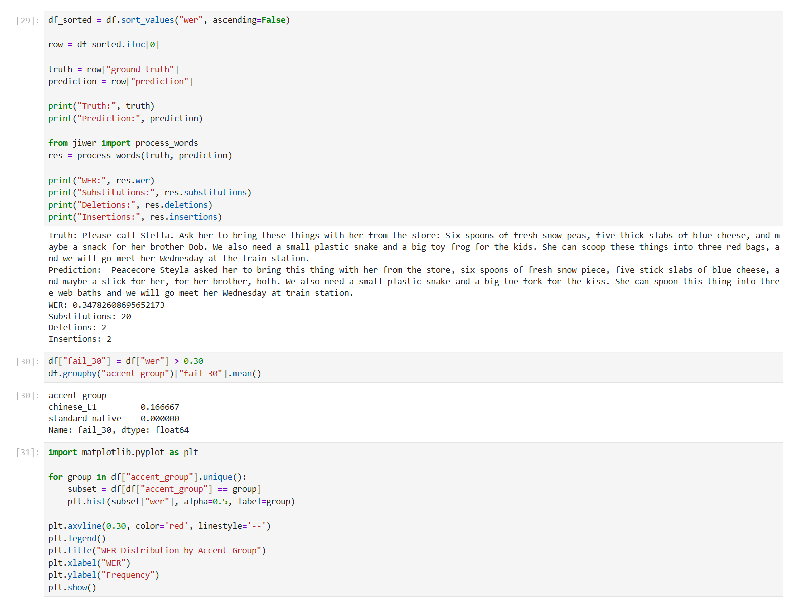
This section conducts a detailed analysis of the sample C5 (with the highest WER) that has the poorest recognition effect, and divides the errors into three categories: Substitution, Deletion, and Insertion. Among them, "Substitution" refers to the situation where the model identifies one word as another. "Deletion" means that the model misses out on words present in the actual text. "Insertion" indicates that the model generates unnecessary words. From the results, the errors mainly originated from Substitution (20 times), indicating that the model is more likely to misidentify speech as words with similar pronunciations. Additionally, after defining WER greater than 0.30 as "failed samples", it can be observed that the high errors mainly occurred in the chinese_L1 accent, reflecting the performance differences of the model across different accents. Errors are categorized into substitution, deletion, and insertion. Substitution errors dominate, showing the system frequently confuses similar-sounding words.
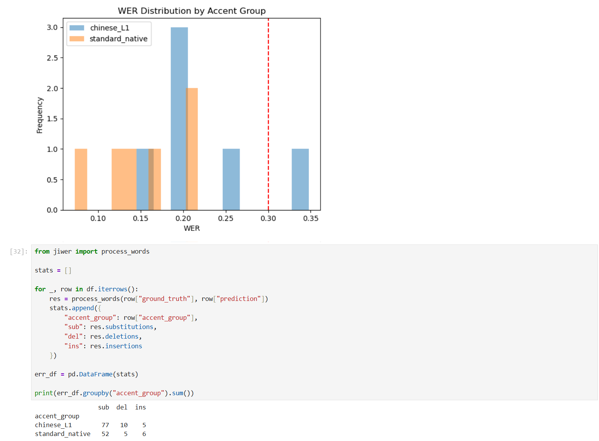
This figure visualizes the table data generated based on the transcription results, showing the distribution of transcription error rates (WER) for Chinese-accented English speakers and standard-native English speakers. The results indicate that the overall error rate of Chinese-accented English speakers is higher and more dispersed. The red dotted line in the figure represents the failure threshold (WER > 0.30), and the recognition results exceeding this threshold are more likely to affect subsequent intent recognition and service decisions. This suggests that speech with non-native accents is more likely to be misunderstood by automatic speech recognition systems.
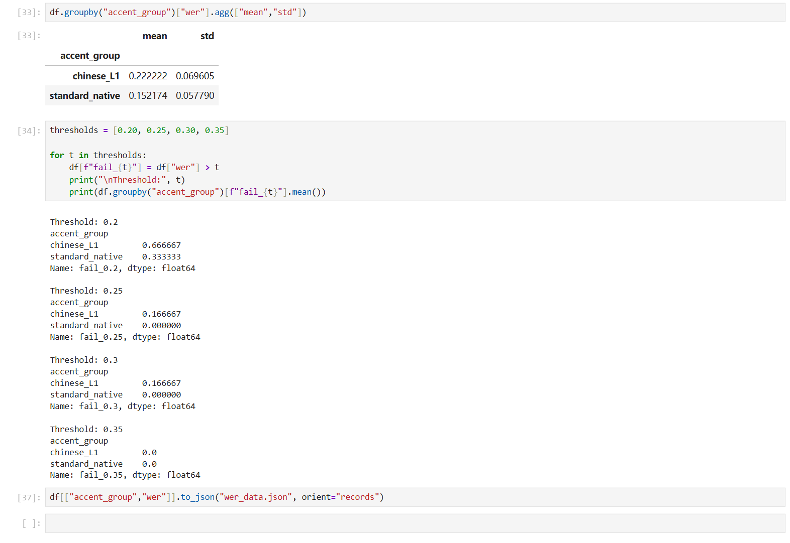
This interface records previous voice input and its transcribed results. The history record interface saves previous voice interactions and recognition results. By viewing the interaction history, users can observe how the system interprets their speech in multiple attempts. By tracking these interaction histories, this interface can reveal how users gradually adjust their speaking style to adapt to the system's recognition logic.
This graph shows the mean (average) and standard deviation (std) of word error rates (WER) for different accent groups. The mean represents the overall average recognition error rate, with higher values indicating poorer performance. The results show that the chinese_L1 (0.22) have a higher score than the standard-native (0.152), indicating that the model's recognition performance for Chinese accents is relatively weak. Std represents the degree of dispersion of errors, that is, the magnitude of fluctuations between different samples. The std of chinese_L1 is slightly higher, indicating that its recognition results not only have more errors, but also have poorer stability; while the recognition of standard_native is relatively more stable.
Where does inequality appear before or beyond the model? Before the model makes its prediction, the process of collecting and processing the voice has already resulted in inequality. The voice is first converted into an audio signal, and then processed in segments and features are extracted to transform it into a form that can be recognized by the system. For speakers with an accent, differences in pronunciation, rhythm, and stress can affect how the speech is segmented and represented at this stage, leading to a mismatch between the input features and the preset patterns of the system. This means that some users are already at a disadvantage before entering the model.
Before the model makes its prediction, the process of collecting and processing the voice has already resulted in inequality. The voice is first converted into an audio signal, and then processed in segments and features are extracted to transform it into a form that can be recognized by the system. For speakers with an accent, differences in pronunciation, rhythm, and stress can affect how the speech is segmented and represented at this stage, leading to a mismatch between the input features and the preset patterns of the system. This means that some users are already at a disadvantage before entering the model.
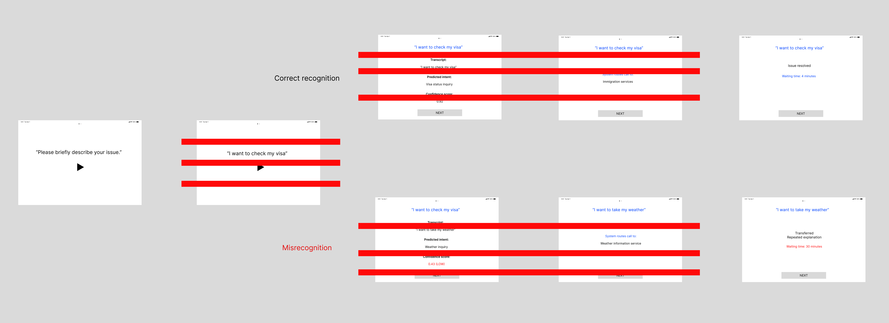
The voice service interface typically only presents the final interaction result to the user, while the intermediate calculation processes such as voice transcription, confidence score evaluation, and intent prediction are invisible to the user. When there is a misrecognition, users often only receive a generic response or are wrongly transferred, but they cannot understand the specific reason for the error.
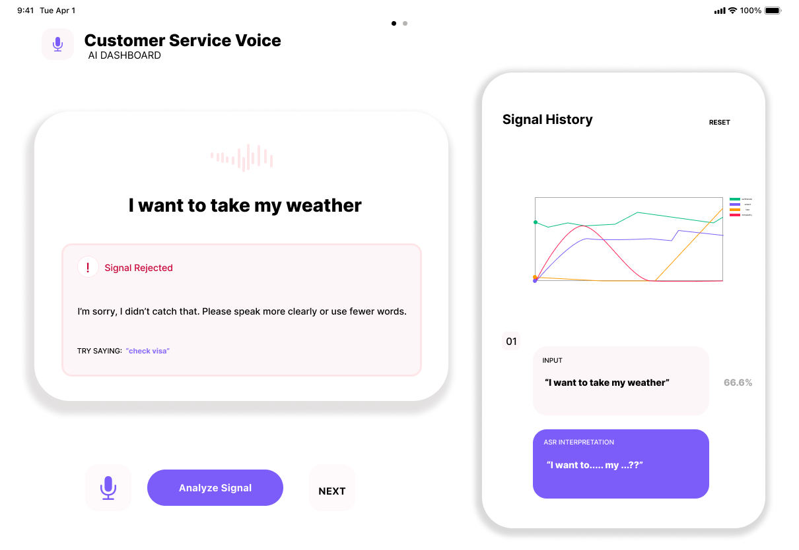
This interface simulates the scenario where users query their visa status through voice. The system first converts the voice input into text. However, due to differences in accents, it might mistakenly transcribe "I want to check my visa" as "I want to take my weather", thereby causing the keywords to be unrecognizable and triggering the "signal rejected" message. The ASR interpretation module in the interface shows the system's understanding process of audio signals and marks uncertain parts in the transcription with "..." and "???", making the originally invisible speech-to-text process visible to the user, thereby helping the user understand how recognition errors occur.
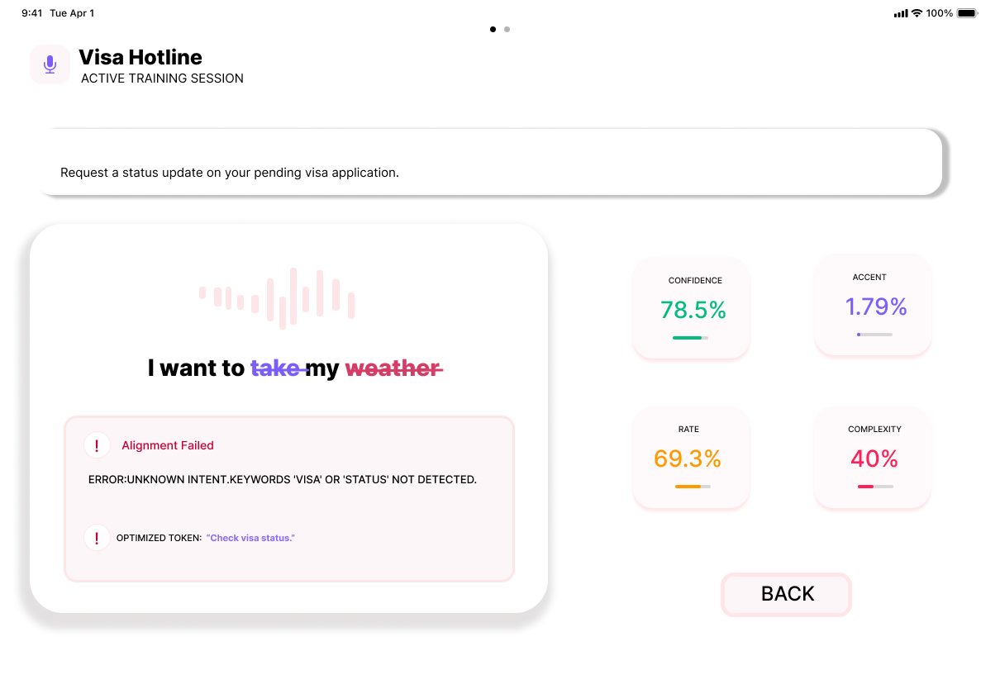
This interface explains how the system evaluates voice input. Metrics such as recognition confidence, accent matching, speech rate, and sentence complexity are typically hidden within traditional voice service systems. This prototype visually presents these metrics so users can understand how the system evaluates their voice input and why recognition errors occur.
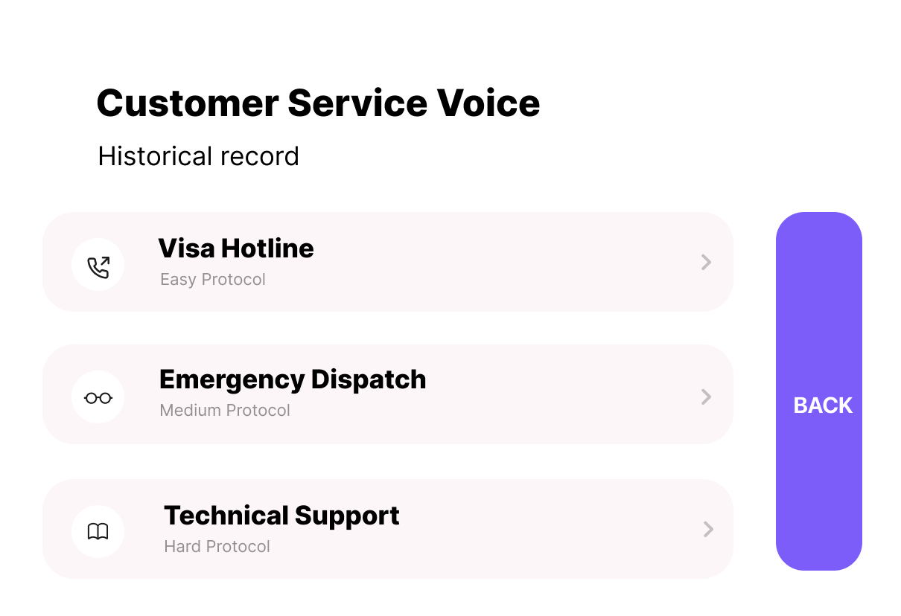
This interface records previous voice input and its transcribed results. The history record interface saves previous voice interactions and recognition results. By viewing the interaction history, users can observe how the system interprets their speech in multiple attempts. By tracking these interaction histories, this interface can reveal how users gradually adjust their speaking style to adapt to the system's recognition logic.
This design, as a system-level intervention, introduces a transparent speech recognition interface, enabling the system to display transcription results, confidence levels, and uncertainties in intent judgment in real time, thereby making the originally hidden recognition process visible. The prerequisite is to enable users to clearly understand exactly at which step the error occurred during the identification process, rather than directly facing the final failure result. When errors are made transparently, users may no longer attribute the problems to their own language abilities, and at the same time, companies or institutions can identify the structural deviations in the speech recognition system. Through this design prototype, it can be observed that the number of repeated attempts by users decreases, error corrections become more direct, and the accuracy of identifying and diverting users with accents improves. In the long run, this will help reduce the additional communication costs for non-native speakers in voice services, thereby promoting the development of voice interaction systems in a more equitable direction.